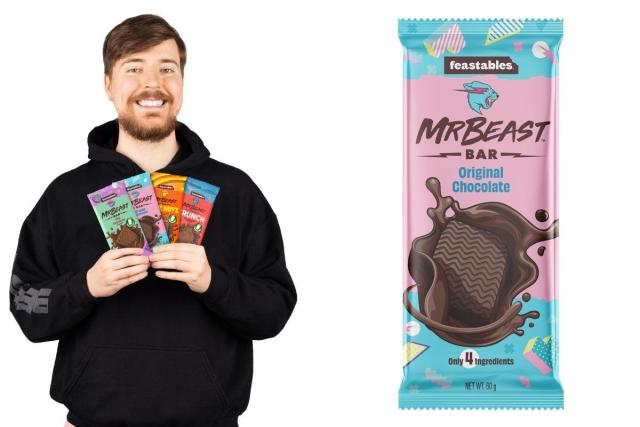
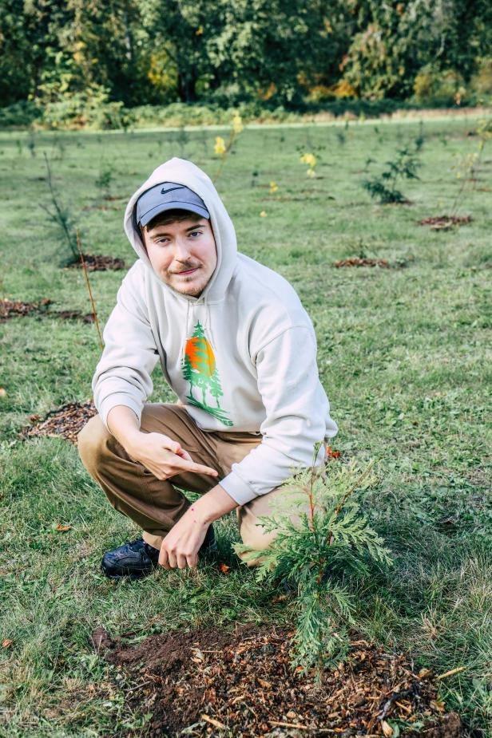
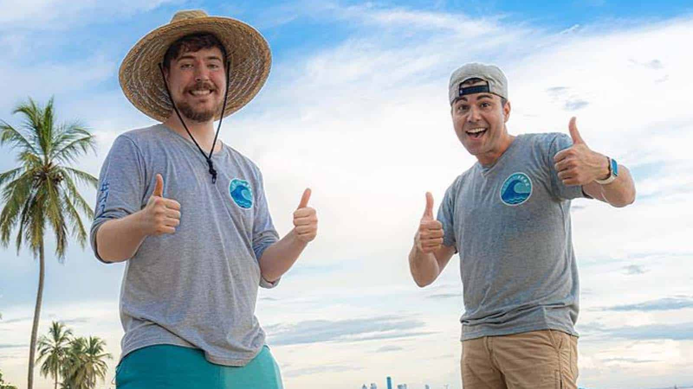

MrBeast
Jimmy Donaldson also known as Mr. Beast is an American youtuber known for giving away countless amounts of money to his fans and helping people in need by doing many good deeds
MrBeast |
|
Jimmy Donaldson also known as Mr. Beast is an American youtuber known for giving away countless amounts of money to his fans and helping people in need by doing many good deeds |
| Home | businesses | education | other experience | work experience |
| Mr Beast is the founder of MrBeast Burger which was founded on December 19, 2020 |
| Mr Beast ended up making his own chocolate brand called feastables which launched in january 29, 2022 |
| Mr Beast is the co-creator of team trees, a fundraiser for the Arbor Day foundation that has raised over $23 million |
| Mr Beast one of the founders of team seas, a fundraiser for Ocean conservancy and the ocean cleanup that has raised over $30 million |
|  |  |
 |  |